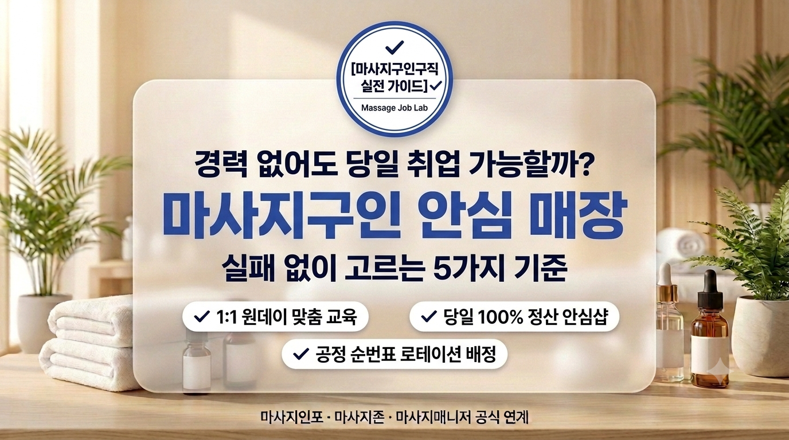

건전한 테라피 샵을 검증하는 첫 번째 기준은 바로 법적 인허가 상태입니다. 대한민국에서 합법적으로 신체 테라피를 제공하는 매장은 관할 지자체(구청 및 보건소)에 명확한 기준을 갖추고 정식 등록을 마쳐야 합니다. 일반적으로 건전 스파 및 마사지 샵은 공중위생관리법에 따른 '피부미용업(일반미용업)'으로 신고되어 있거나, 체형 관리 및 릴랙세이션 목적의 '자유업' 형태로 정식 사업자등록증을 발급받아 운영됩니다.
정상적이고 건전한 프랜차이즈나 로드샵 매장은 고객과 근무자 모두가 신뢰할 수 있도록 카운터 데스크 주변이나 로비 벽면 등 눈에 잘 띄는 곳에 영업신고증 원본과 사업자등록증을 액자에 넣어 당당히 게시합니다.
매장의 물리적인 공간 설계와 인테리어 구조는 해당 매장이 지향하는 영업 방향성을 가장 정직하게 보여주는 거울입니다. 합법적이고 건전한 에스테틱 및 스웨디시 전문점은 관리실 문 구조와 조명 세팅에서 확연한 차이를 보입니다.
가장 결정적인 차이는 '관리 룸 도어의 잠금장치(Lock) 유무'입니다. 현행법상 건전 마사지 샵은 위급 상황 시 즉각적인 출입이 가능하도록 관리 룸 문 안쪽에 도어록, 걸쇠, 빗장 등의 잠금장치를 설치하는 것이 엄격히 제한됩니다. 대부분 문이 없거나 커튼으로 분리되어 있으며, 목재 여닫이문이라 하더라도 밖에서 쉽게 밀고 들어갈 수 있는 무잠금 도어로 시공됩니다.
또한 복도와 대기 로비는 은은한 간접등과 아늑한 우드 톤 조명을 사용하더라도, 사람의 얼굴과 보행 동선이 선명하게 식별될 만큼 쾌적한 조도를 유지하고 있어야 합니다. 시야가 차단된 밀폐 구조는 관리사의 안전을 위협하는 가장 위험한 요소입니다.
구인 공고나 매장 입구 메뉴판에 기재된 시술 프로그램 명칭과 이용 요금(객단가)만 객관적으로 뜯어보아도 건전 여부를 90% 이상 판별해 낼 수 있습니다.
정상적인 샵은 '스웨디시 테라피 60분/90분', '아로마 림프 케어', '건식 스포츠 딥티슈'처럼 공인된 테크닉 명칭과 관리 부위, 소요 시간을 투명하게 명시합니다. 반면, 합법적인 기술 명칭 대신 정체불명의 은어나 "힐링 스페셜", "VIP 밀착 코스" 등 자극적이고 모호한 수식어를 전면에 내세우는 매장은 음성적인 서비스를 전제로 구직자를 유인할 가능성이 매우 높습니다.
테라피스트가 고객과의 1:1 케어 룸에서 온전히 테라피에만 집중하고 안전을 보장받으려면, 매장 프런트의 방어벽이 얼마나 견고한지가 무엇보다 중요합니다.
건전 샵은 100% 사전 회원제 예약 시스템을 운영하며, 번호 확인 및 사전 상담을 통해 취객, 폭언자, 비매너 고객의 방문을 1차적으로 엄격히 필터링합니다. 만약 케어 도중 손님의 무리한 요구가 발생하더라도, 각 룸에 설치된 비상 인터폰이나 호출 벨을 누르면 카운터에 상주하는 원장이나 총괄 매니저가 즉각 개입하여 상황을 통제하고 해당 손님을 즉시 퇴실 조치(블랙리스트 영구 등록)합니다.
반면 초보 관리사 혼자 매장을 지키며 문을 열어주고 결제까지 도맡아야 하는 '무인형 1인 근무 샵'이나, 카운터 직원이 퇴근해 버리고 관리사들만 심야에 상주하는 곳은 돌발 상황 발생 시 대처 능력이 취약합니다. 특히 경력이 부족한 초보 구직자일수록 원장이나 전담 실장이 상시 데스크에 상주하는 매장을 첫 직장으로 선택해야 합니다.
1. 인허가 확인: 피부미용업 또는 체형관리 자유업 정식 사업자등록증 원본 게시 여부
2. 룸 구조 점검: 관리실 안쪽 잠금장치 부재 확인 및 쾌적한 복도 조도 환경
3. 프로그램 투명성: 스웨디시·아로마 등 공인 테크닉 명칭과 합리적인 객단가 구조
4. 안전 관리 체계: 철저한 사전 예약 필터링 및 카운터 상주 관리자의 즉각적 보호 체계
테라피스트는 손끝의 정성과 전문 기술로 고객의 피로를 풀어주고 치유를 선사하는 훌륭한 웰니스 전문가입니다. 취업이 다급하다는 이유로 매장의 미심쩍은 신호나 불투명한 조건을 애써 합리화하며 출근을 서두르지 마시기 바랍니다.
체계적이고 건전하게 운영되는 일터일수록 지원자의 안전을 최우선으로 여기며, 첫 면접부터 시설과 정산 규정을 투명하게 안내합니다. 오늘 테라피 인사이드가 짚어드린 4가지 체크포인트를 꼭 기억하셔서, 몸과 마음 모두 안심하고 자부심을 가지며 롱런할 수 있는 쾌적한 일터를 선택하시기를 진심으로 응원합니다.